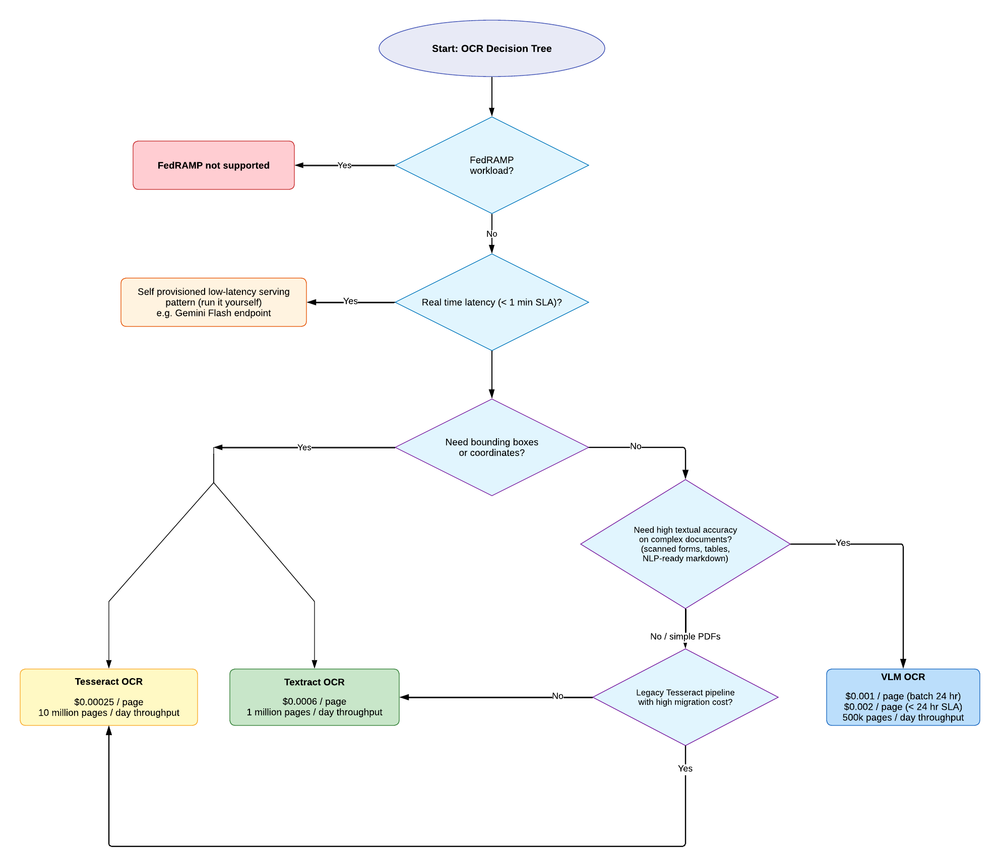

| Engine | Best For | Pros | Cons |
|---|---|---|---|
| Tesseract | Legacy risk adjustment, ultra-low cost | Low cost, simple | Lower accuracy, infrastructure complexity |
| Textract | Coordinate-dependent workflows | Bounding boxes, structured blocks | Less semantically rich output |
| VLM (Gemini Flash, etc.) | NLP-ready, markdown output, high accuracy | High text quality, structured output | Higher cost, no coordinates |
| Solution | Throughput |
|---|---|
| VLM OCR | 500k pages / day |
| Textract OCR | 1 million pages / day |
| Tesseract OCR | 10 million pages / day |
| Solution | Pricing |
|---|---|
| VLM OCR (batch 24 hr) | $0.001 / page |
| VLM OCR (< 24 hr SLA) | $0.002 / page |
| Textract OCR | $0.0006 / page |
| Tesseract OCR | $0.00025 / page |
Follow the flowchart below to determine which OCR engine fits your use case.

Click image to open in Lucid Chart